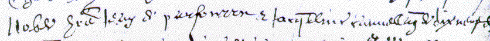
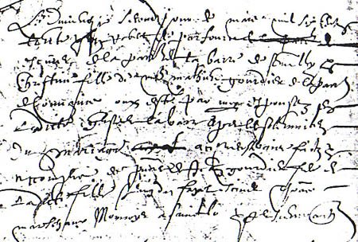
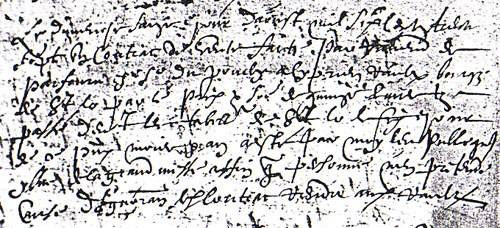
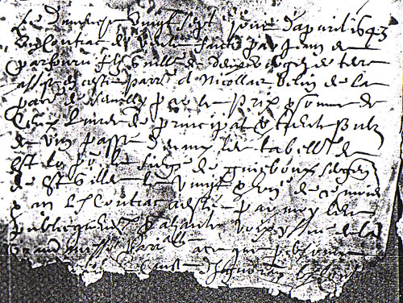
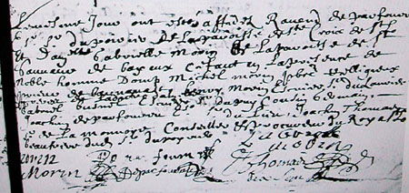

REGISTRES PAROISSAUX
(2/2)
REGISTRES PAROISSAUX
(2/2)
REGISTRES PAROISSAUX
(2/2)
REGISTRES PAROISSAUX
(2/2)
Provenance : Archives Départementales de la Manche
- 19 ?? 1594

Noble ho[mm]e Jean de parfourru et Jacqueline cauvellan[de] dix neuf de ??
- 23 juin 1757
Le vingt trois juin 1757 françois julien charle rené
fils de francois de parfouru esc[uye]r s[ieu]r de blagny de la par[oisse] de L[ison]
décédé en la par[oisse] de Moon a été inhumé dans le cimetiere
de Moon proche la Croix par nous Curé de la prebende dud[it] lieu
p[resen]ce de jean Le febvre s[ieu]r de la Vallée led[it] enfant agé de vi[ron]
quatre mois et jean Raoult custos signé avec nous
Provenance : Jean-Jacques Bréguet
- 29 novembre 1781
Firmin LE FEVRE du PERRAY, fils de Jean et d'Elisabeth LE BLOND, de Moon sur Elle, épouse Marie Françoise de PARFOURU, fille de François et de Renée CALLET de SAINT AUBIN
Provenance : Archives Départementales de la Manche
- 2 mars 1631

Le dimanche Second jour de mars mil six Centz
trente et un Robert de parfouru de la parr de
escuier de la parr[oisse] de la barre de Semilly et
Christine fille de m[aîtr]e mathieu gourdier de la parr[oisse]
de Couvains ont esté par moy espousez en
la dicte eglise de la barre apres les Solennites
du mariage? ? faictz et
accomplie en pr[ese]nce de Jean gourdier frere de
La dite fille Jean du fayel escuier fran[çois]
mareschaux Monnoyer a Saint lo
Le dimanche Seize jour d aoust mil Six Cent trente
sept un contrat de vente faict par Ravend de
parfouru esc[uye]r S[ieu]r du gruchy(?) a Cyprien Raulx bourgeois
de St lo par le prix et So[mm]e de quinze Livres t[ournois]
passé devant les tabell[ions] de St lo le Six jour
de ce p[rese]nt mois et an a esté par moy leu Publiqu[eme]nt
Yssue de la grand messe affin q[ue] personne n'en(?) pretende
Cause d ignoran[ce] led[it] Contrat Rendu aud[it]Raulx
Le dimanche Vingt Sept jour d'apvril 1643
un Contrat de vente faict par Jean de
parfouru filz Guill[aume] de deux verges de terre
assises en cette parr[oisse] a nicollas belin de la
parr[oisse] de Semilly par le prix et somme de
Cent Livres de principal et trente Solz
de vin passé devant les tabell[ions] de
St Gilles le vingt et un de ce mois
et an Led contrat a esté par moy leu
publiquem[ent] et a haute voix yssue de la
grand messe parr[oissi]alle a ce que personne
[...]
Provenance : Archives Départementales de la Manche, via
Philippe Lemesnager
- 28 novembre 1669

Le present Jour ont estés affidés Ravend de parfouru
Es[cuye]r S[ieur]r du poirier De La paroisse de s[ain]te Croix de S[ain]t Lo
Et dam[oise]lle Gabrielle Morin de La paroisse de S[ain]t
Sauveur de bayeux ce faict en La presence de
noble homme Domp Michel morin p[rêt]re Relligieux
prieur de ? henry Morin Escuier S[ieu]r du Laurier
freres de la dicte dam[oise]lle
Gabriel busnel Escuier S[ieu]r du puy Cousin Germain
Joachim de parfourru Esc[uye]r s[ieu]r de Lieu, Joachim Thomas
S[ieu]r de La Monnoye Conseiller et procureur du roy a S[ain]t Lo
beau frere dud[it] s[ieu]r du poirier
Provenance : Archives Départementales de la Manche, http://recherche.archives.manche.fr
- 8 novembre 1698
Le huictiesme de novembre audit an [1698] Charles Gislet fils de Louis
et Elisabeth pouchin, et Catherine de parfouru fille de feu pierre de parfouru
escuier et francoise de la gonniviere ont receu la benediction nuptiale
par moi ministre apres les ceremonies accoutumées, en presence de Louis
pouchin Gislet Ravent de parfouru escuier Jacq pouchin
Signatures de C. Gislet, De Parfouru, De Parfouru, Gislet, Magdeleine Leheup, J Pouchin, Cardon, marque de Catherine de Parfouru
- 7 avril 1705
Ce sept[iem]e jour de avril mil sept cents cinq Louis Helies fils
Jean helies et françoise Jean de la parroisse de St Thomas d'une
part et francoise godet fille de deffunct Rolland françois godet
et de francoise parfouru d'autre part ont receu la benediction
nuptiale apres la publication d'un banc et les dispenses des deux
autres bancs et dispenses du temps en presence de pierre godet
fille dudit francois godet et frere de la ditte fille et Jacques godet
son cousin germain lesquels ont assuré n'y avoir aucune opposition
Signatures de Louis Helie, François Godey, P. Godey, J. Godey, Cardon
- 25 août 1705
Le vingt cinq[uiem]e jour daoust aud an 1705
un fils né en legitime mariage le vingt trois
dud mois et an pour charles gislet et dam[oise]lle catherinne
de parfouru de cette parr[oisse] a esté baptisé led jour
et an que dessus par nous michel Le rebourg pbre vicaire
de la parr[oisse] de gourfaleur et a esté nommé Jean par
Jean ozouf huissier assisté de dam[oise]lle Jeanne de parfouru
son espouse de la parr[oisse] de condé sur Vire en presence
de Jean baptiste ozanne de lad parr[oisse] et aultres
Marque de Jeanne de Parfouru, signatures Osouf, Lerebours, Ozenne
Provenance : Archives Départementales de la Manche, http://recherche.archives.manche.fr
- 26 novembre 1748
L'an mil sept cent quarante huit le vingt six
de novembre après la publication pour premier
faite au prône de nôtre messe (et de celle de S[ain]t gervais) paroissiale le dimanche
vingt quatre dud[it] mois du futur mariage de francois
de parfouru ecuier s[ieu]r du Val fils de Jacques de
Parfouru ecuier s[ieu]r de Blagny et de noble dame marie
de monfiquet ses pere et mere originaire de la paroisse
de Lizon dioceze de Baieux et a present demeurant
de tems de droit en la paroisse de S[ain]t Gervais dioceze
d'avranches d'une part et noble dame renée perrine
gatet fille de Georges Gatet sieur de S[ain]t aubin et de
marie Louise de Campion ses pere et mere d'autre part
de cette paroisse et après la dispense de deux bans
obtenue de monseigneur l'Evesque d'avranches en
datte du vingt cinq de novembre 1748 signée dud[it]
Seigneur Evêque et de son secretaire insinuée et
controllée au bureau des insinuations ecclesiastiques
le même jour par becquet sans connoissance
d'aucun Empechement en civil ni canonique
nous soussigné curé de cette paroisse leur
avons donné la benediciton nuptiale en la maniere
prescritte par l'Eglise par l'"glise aux presences et du
consentement dud[it] Jacques de parfouru ecuier s[ieu]r
de Blagny dud[it] Georges galet S[ieu]r de S[ain]t aubin de Joseph
de Juvigny Ecuier en outre aux presence de m[ait]re
Nicolas p[re]tre et de Charles Bazin Sieur de la goderie
temoins signés avec les dittes parties
Signatures de Parfouru, de Parfouru, renee galet, G. Gallet, de Juvigny, C. Bazin, N. Cudelou, J. Langlois curé de Tirpied
Provenance : Archives Départementales de la Manche, http://recherche.archives.manche.fr
- 23 mai 1684
Le 23 ie[me] de may 1684 a esté baptisée anne
Elisabet de parfouru sortie du legitime mariage
dentre noble homme Joachim de parfouru esc[uyer]
et de dam[oise]lle Jacqueline de monfiquet a esté nomm[ée]
par dam[oise]lle anne Elisabet du boisdelle assistée
de noble homme Jean denis Escuier thesmoings
Jean briand et robert hamel
Provenance : Archives Départementales de la Manche, http://recherche.archives.manche.fr
- 9 août 1777 (http://recherche.archives.manche.fr/?id=viewer&doc=accounts%2Fmnesys_ad50%2Fdatas%2Fir%2Fetat_civil%2FFRAD050_etat_civil.xml&page_ref=763958&lot_num=1&img_num=124)
Le samedy neuf aoust mil sept cent soixante dix sept après
la publication des bans faitte par trois jours de dimanches
consecutifs aux prônes des hauttes messes tant en cette eglise
qu'en celle de la barre du futur mariage d'entre pierre
de parfouru ecuier sieur de plantro fils majeur de
pierre de parfouru ecuier sieur de la fosse et de
deffunte marguerite buot ses pere et mere originaire et
domicilié de la barre d'une part ; et jeanne aze fille
majeure de deffunt de denis aze laboureur et de
jeanne duhomme ses pere et mere de ce lieu ; a laquelle
publication ne s'etant trouvé aucun empeschement ny
opposition nous soussigné curé de St Ebremond et St pierre
de Semilly avons reçu leur mutuel consentement de
mariage et leur avons donné la benediction nuptialle avec
les ceremonies ordinaires et prescriptes en presence et
du consentement dudit sieur de parfouru pere d'epoux, de
la mere de l'epouse qui a dit ne scavoir signer, de denis
et thomas aze freres de l'epouse, et de plusieurs autres
parens et amis qui ont tous signé au present avec nous
et les dits epoux
signatures de Jeanne Aze, de Parfouru, D. Aze, T. Aze, Duhomme, P. Aze, Jacques Aze, J. Sallen, Le Conardel, Duvilliers, J. Heurtevant, curé.
Provenance : Archives Départementales de la Manche, http://recherche.archives.manche.fr
- 23 novembre 1673 (http://recherche.archives.manche.fr/?id=viewer&doc=accounts%2Fmnesys_ad50%2Fdatas%2Fir%2Fetat_civil%2FFRAD050_etat_civil.xml&page_ref=179030&lot_num=1&img_num=249)
Du vingt troisieme jour de novembre [1673] apres
fiancalles et publication de bancs par trois dymanches
continus des messes parroissialles ne setant
descouvert aucun empeschement Je francois
de brebeuf esc[uye]r pbre cure dud lieu en la
portion du pont interroge pierre de parfouru
sieur de la freneliere et dam[ois]elle fran[çoise de la]
gonniviere et leur consen[tement]
par moy princt leur ay sollenellement par parolle
de present conjoints en mariage et ayant(?)
donne la benediction nuptiale selon la forme
de notre mere la S[ain]te Eglize en la presence de
Jean de parfouru esc[uye]r sieur de Ergansie Joachim
de parfouru esc[uye]r sieur duval george des montie
esc[uye]r sieur de cardonnel francois totain et
plusieurs austres tous soubsignes
Signatures de Françoise de la Gonnivière, de Parfouru, de Parfouru, de Parfouru, Georges des Monstiers, et marque de François Totain.
Le cinqiesme jour de may [1676] par moy philippe
Ysabel pbre curé dud[it] lieu en la portion de la
belleniere a esté baptise Raven gabriel de parfouru
nay en et du legitime mariage de pierre de parfouru
esc[uie]r s[ieu]r de la freneliere et dam[ois]elle francoise de la
gonniviere et nommé par Raven de parfouru
esc[uie]r S[ieu]r du pouerier et dam[ois]elle gabrielle morain
parrin et marrine
Signatures de Gabrielle Morin, de Parfouru et P. Ysabel
- 17 juillet 1676 (http://recherche.archives.manche.fr/?id=viewer&doc=accounts%2Fmnesys_ad50%2Fdatas%2Fir%2Fetat_civil%2FFRAD050_etat_civil.xml&page_ref=179069&lot_num=1&img_num=14)
Le dix sept iesme jour de juillet [1676] pierre de
parfouru en son vivant escuier sieur de la
frenelliere a rendu l'ame a dieu apres
estre confesse et avoir receu le tres sainct
viatique du corps de nostre seigneur et
le sacrement d extre[me] onction duquel le corps
a este inhume dans l'eglize dud[it] lieu
par moy francois de brebeuf esc[uie]r pbre
cure dud[it] lieu en la portion du pont en la
presence de Jean de parfouru esc[uie]r sieur d
ergansie maistre francois bertrand pbre
et plusieurs autres
Signatures de F. Bertrand et de Parfouru.
Provenance : Archives Départementales de la Manche, http://recherche.archives.manche.fr
- 24 janvier 1700 (http://recherche.archives.manche.fr/?id=viewer&doc=accounts%2Fmnesys_ad50%2Fdatas%2Fir%2Fetat_civil%2FFRAD050_etat_civil.xml&page_ref=105344&lot_num=1&img_num=73)
Le vingt quatreieme jour de janvier mil sept
cents ayant fait la publication des bans au prone
de la messe paroissialle de berigny avec desclaration
que intention des parties estoit de se pourvoir des deux
autres et apres les fiancailles moy soussigne vicaire
de lad[ite] paroisse apres avoir receu leur mutuel consen
tement et ne s estant trouvé aucun empeschement ay
solenellement conjoint en mariage par paroles de present
Richard gabriel de parfouru escuyer sieur du mesnil
Grimot fils et heritier de feu pierre de Parfouru escuyer
Sieur de la fremiliere et de demoiselle francoise de
La Gonniviere ses pere et mere de la paroisse de Condé
sur vire et de Demoiselle marie rose de Gohié fille
de defunct Jean de Gohié escuier Seigneur de precaire
et de noble dame marie auvray ses pere et mere de
meurant de present en cette paroisse en presence de
Pierre thiboult escuier Seigneur de berigny, et de
noble dame marie auvray, Charle thiboult escuier
sieur de tilly et de Jacques Joseph de Goyer tesmoins
et ensuitte ay celebré la saincte messe et leur ay donné
la benediction nuptiale selon la forme et ceremonie
observée dans l eglise ce que les dis maries et tesmoins
ont signé avec moy
Signatures de Parfouru, Marie rose de gohier, Marie Auvray, Charles Thiboult
Provenance : Archives Départementales du Calvados, via Philippe Gras
- 29 novembre 1748
aujourdhuy vingt neuf[iem]e jour de novembre mil sept cent quarante huit apres
la publication d'un baon faitte dimanche dernier au prônes des messes tant
de s[ain]t agnan de cramesnil suivant l'attestation du Sr curé dud[it] s[ain]t agnan
en datte du vingt cinq du present mois, qu'en celle de s[ain]t aubin d oüesy
sans opposition, vû les dispenses des deux autres baons données l'une par
M[onsei]g[neu]r L'evesque de Sees dattéee du vingt huit du present mois, l'autre
donnee par M[onsieu]r l'official de bayeux residant a Caen, dattee de vingt cinq
du present mois, touttes deux dûment en forme, les fiancailles f[ai]tes le
vingt six aussy du present mois et autres ceremonies de L'eglise dûment
observées nous nicolas detoy p[re]tre vicaire douésy avons procédé a la
benediction nuptialle de Messire Jacques de parfouru es[cuy]er fils de feu
Michel de parfouru es[cuy]er et de noble dame Marie de bonnet ses
pere et mere de s[ain]t agnan de Cramesnil diocese de bayeux d une
part, avec damoiselle Catrine de picot fille de feu Messire jean
charles de picot chevalier Seigneur et patron de Magny la Campagne
et autres lieux et de feue noble dame Marguerite du bourget ses pere et
mere dud[it] ouesy d autre part presence de Messire Charle auguste de
picot es[cuy]er et de noble dame ravenne patry, de Messire anthoine de
cheux es[cuy]er de Messire jean francois louis de cheux es[cuy]er s[ieu]r du boulley
de Messire guy le guet es[cuy]er Seigneur de cresserons de Messire rené
henry Segouin sieur de la riviere de noble d[emois]elle Marie anne de parfouru
et de noble demoiselle louise françoise de cheux et autres qui ont
signé avec les dittes parties
Signatures de Catherine de Picot, J. de Parfouru, de Picquot, Patry, de Picot, A. de Cheux, de Cheux, L.F. de Cheux, de Parfouru,
R. H. Segouin de la Rivière, Le Goues de Cresserons, N. Detoy,
vicaire de St Aubin douëzy, Hatin, curé douesy
Signatures de F. Bertrand et de Parfouru.
Provenance : Archives Départementales de la Manche, http://recherche.archives.manche.fr, via Laurent Rousselle
- 8 janvier 1557 (http://recherche.archives.manche.fr/?id=viewer&doc=accounts%2Fmnesys_ad50%2Fdatas%2Fir%2Fetat_civil%2FFRAD050_etat_civil.xml&page_ref=619930&lot_num=1&img_num=6)
Marie de p[ar]fouru vefve de deffunt
J[ean ?] de there fut inhumee le
viii jour de janvier [1557]
Le se... (?) de son testament est
en un autre registre
Provenance : Inventaire sommaire des Archives départementales
antérieures à 1790. Calvados. Archives civiles.
Série C (1867)
C.1566 1563-1567 - Protestants - Etat civil - Ville de Caen :
Le mercredi 22 août 1565, la fille de Jean de Troismonts, écuyer, sieur de Feuguerolles, et de Marie de Parfouru, sa femme, du quartier de Saint-Pierre, nommée Judith par noble homme Jean Brissebourg.
C.1568 1570-1571 - Protestants - Etat civil - Ville de Caen :
Le dimanche 18 mars 1571, à Venoix, a été
baptisé le fils de noble homme Jean de Troismonts,
écuyer, sieur de Feuguerolles, et de Marie de Parfouru, demeurant au quartier Saint-Etienne, et nommé Pierre par Pierre Guérard, écuyer, sieur de Soliers.
C.1569 1571-1572 - Protestants - Etat civil - Ville de Caen :
Le mardi 6 mai 1372, a été baptisée la fille de
noble homme Jean de Troismonts, sieur de Feuguerolles et de Marie de Parfouru, nommée Marie par Richard Auber, sieur de Près, en la paroisse d'Amayé.
Provenance : Archives Départementales de la Manche, http://recherche.archives.manche.fr, avec l'aide de Nicole Fréret
- 17 janvier 1636 (http://www.archives-manche.fr/ark:/57115/a0112880857670TJCJu/651539da22)
Du jeudy 17e jour Georges fils de Richard de
parfouru esc[uye]r et de guillemette buot ses pere
et mere a esté baptisé et nommé par georges
de Sainct Laurens fils denis et gillette buot sa f[emm]e
- 5 avril 1638 (http://www.archives-manche.fr/ark:/57115/a0112880857670TJCJu/e1db1f169e)
Du lundy cinq[uieme] jour [avril 1638] Marie fille de robert
de parfourru esc[uye]r et de Christine gourdier
ses pere et mere a esté baptisée par Moy curé
et Nommée par Marie gourdier et Mathieu
son frere
- 5 juin 1646 (http://www.archives-manche.fr/ark:/57115/a0112880857670TJCJu/f4c9982536)
Du Mardy cinq[uiem]e jour J'ay faict la benediction
du bois d'une grange ?? pour Richard de parfourru
esc[uye]r s[ieu]r de haute fontaine
- 22 juin 1646 (http://www.archives-manche.fr/ark:/57115/a0112880857670TJCJu/f4c9982536)
Du vendredy 22[ièm]e Jour michelle de parfourru
f[emm]e d'estienne groult a esté inhumée dans le
cymetiere
- 2 juillet 1646 (http://www.archives-manche.fr/ark:/57115/a0112880857670TJCJu/f4c9982536)
Du lundy second jour de juillet aud[it] an [1646] guillemette
de buot f[emm]e de Richard de parfourru esc[uye]r
a esté Inhumée dans lad[ite] Eglise
devant l'autel Saincte margueritte devers le mur
- 26 juin 1650 (http://www.archives-manche.fr/ark:/57115/a0112880857670TJCJu/b9022c206d)
Du dimanche vingt six [juin 1650] Richard de
parfourru esc[uye]r et honneste f[emm]e Marie
boyvin vefve de Cyprien rault ont esté
espousés ensemble par nous curé en
la presence de georges, jude et denis
de Sainct laurens Me pierre lebreton
pbre et plusieurs au[tr]es de leurs parens
et amis
- 25 avril 1677 (http://www.archives-manche.fr/ark:/57115/a011288085767P26Blc/3d46a19667)
par nous Curé Soub Signé a esté baptisée
une fille née en légitime mariage sortie
des personnes d'honneste ho[mm]e M[aîtr]e Jacques deffaudais
S[ieu]r de la Crette et de Damoiselle barbe de
parfouru son epouse Laquelle a esté
nommée Jacqueline par discrette &
honorable personne M[aîtr]e Jacques Mariette
pbre pris pour parrain & par honneste fille
Margueritte pinel prise po[ur] marrainne
faict le second jour de may annee mil
six cent soixante et dix sept en la présence
de M[aîtr]e georges de parfouru escuier sieur de
hautefontaine et de plusieurs autres
Signature Jacques Mariette, R Vallée, De parfouru, marque de Marguerite Pinel
- 12 mars 1684 (http://www.archives-manche.fr/ark:/57115/a0112880857673tv67D/c2607b3eac)
Aujourd'huy Dimanche douz[iem]e de mars aud[it]
an que dessus [1684] a esté Inhumée honneste femme
barbe de parfouru femme de charles Lecuqu
dans l'église du[it] lieu
la mort luy estant arrivée apres
s'estre délivrée de son enfantement
en la p[rése]ne de M[aî]tre estienne meslin pbre M[aî]tre
Richard Le myere pbre et de M[aî]tre Louis haymel pbre
& de ses parents et amys